1076A72 heat shield for right catalytic preconverter r r
- Path
- Procedures > 10 ENGINE > 1076 EXHAUST PIPES AND SILENCERS > 1076A exhaust pipe fastenings and protections > 1076A72 heat shield for right catalytic preconverter r r
- Kind
- repair procedure (removal / refitting; the operation number is the code)
- Applies to
- engines: 2.5 V6, 3.2 V6; all production periods
- Interactive page
- https://sloeber94.github.io/elrnDB-a156/en/#/3237566
Applies to: engines: 2.5 V6, 3.2 V6; all production periods; only with equipment: Euro 3
 Removing
Removing
 Refitting
RefittingPlace the vehicle on a ramp.
1. Loosen the band (1a) and disconnect the oil vapour recirculation pipe (1b) from the corrugated hose.
2. Loosen the bands (2a) and remove the corrugated hose (2b), complete with resonator.
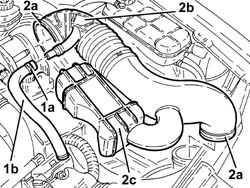
Applies to: engines: 2.5 V6, 3.2 V6; all production periods; only with equipment: Euro 3
Proceed with the removal 5530B10 battery - r+r .
1. Open the cover of the electrical connection box.
2. Disconnect the electrical connection for the right Lambda sensor and release the wiring from the bands.
 | Name | Connector |
|---|---|---|
2 | Lambda sensor on pre-catalyzer -2 |
3. Disconnect the electrical connection from the throttle casing integrated with the D.V.L.
| Name | Connector |
|---|---|---|
3 | Throttle body actuator |
4. Loosen the band (4a) and disconnect the vacuum intake pipe (4b) from the air capacity chamber.
5. Disconnect the fuel vapour recirculation pipe quick-release fitting from the air chamber.
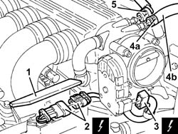
Applies to: engines: 2.5 V6, 3.2 V6; all production periods; only with equipment: Euro 3
1. Disconnect the electrical connection from the fuel injection-ignition control unit.
| Name | Connector |
|---|---|---|
1 | Engine management ECU |
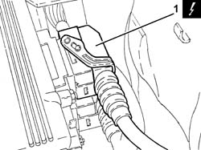
Applies to: engines: 2.5 V6, 3.2 V6; all production periods; only with equipment: Euro 3
1. Undo the bolt (1a) and unscrew (1b) and remove the power unit reaction rod.
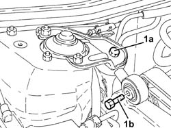
Applies to: engines: 2.5 V6, 3.2 V6; all production periods; only with equipment: Euro 3
Withdraw the oil level dipstick.
Proceed with the removal 7055B54 under-engine guard - r r .
1. Undo the bolt (1a) and remove the bracket (1b) joining the front sections of the exhaust pipe.
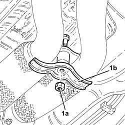
Applies to: engines: 2.5 V6, 3.2 V6; all production periods; only with equipment: Euro 3
1. Undo the lower bolt fixing the left catalytic preconverter heat shield.
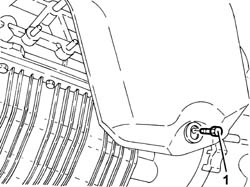
Applies to: engines: 2.5 V6, 3.2 V6; all production periods; only with equipment: Euro 3
1. Undo the nuts fixing the exhaust pipe between the catalytic preconverters and the catalytic converter, catalytic preconverter side.
Remove the gaskets.
Secure the exhaust pipe between the left catalytic preconverter and the catalytic converter at the side.
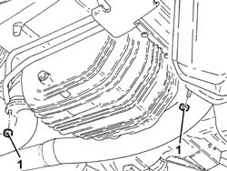
Applies to: engines: 2.5 V6, 3.2 V6; all production periods; only with equipment: Euro 3
1. Undo the nut (1a) and remove the engine oil dipstick tube (1b).
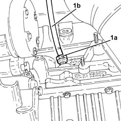
Applies to: engines: 2.5 V6, 3.2 V6; all production periods; only with equipment: Euro 3
1. Position a hydraulic jack under the gearbox.
2. Undo the bolts fixing the power unit gearbox side rigid support to the flexible mounting.
Lower the hydraulic jack slowly, then remove it.
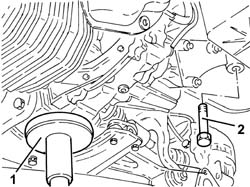
Applies to: engines: 2.5 V6, 3.2 V6; all production periods; only with equipment: Euro 3
1. Open the bands fastening the air conditioning system pipes to the right panel.
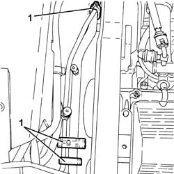
Applies to: engines: 2.5 V6, 3.2 V6; all production periods; only with equipment: Euro 3
1. Undo the right Lambda sensor using a suitable spanner and remove it.
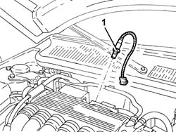
Applies to: engines: 2.5 V6, 3.2 V6; all production periods; only with equipment: Euro 3
1. Undo the nut fixing the electrical wiring mounting bracket to the battery drip tray.
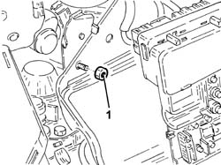
Applies to: engines: 2.5 V6, 3.2 V6; all production periods; only with equipment: Euro 3
1. Disconnect the gear selector and engagement cables.
2. Undo the nuts (2a) and move the mounting bracket (2b) for the gear selector and engagement cables to the side.
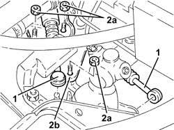
Applies to: engines: 2.5 V6, 3.2 V6; all production periods; only with equipment: Euro 3
Release the starter motor electrical wiring from the bands located behind the right cylinder head.
1. Undo the bolts (1a) and move the rigid coolant supply pipe (1b) to the engine oil heat exchanger.
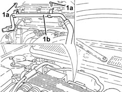
Applies to: engines: 2.5 V6, 3.2 V6; all production periods; only with equipment: Euro 3
1. Undo the nuts (1a) and remove the right catalytic preconverter heat shield (1b).
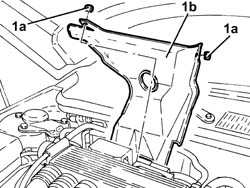
Applies to: engines: 2.5 V6, 3.2 V6; all production periods; only with equipment: Euro 3
Refitting
RemovingPlace the right catalytic preconverter heat shield back in its housing and secure it using the nuts.
Place the rigid coolant supply pipe to the engine oil heat exchanger back in its housing and secure it using the bolts.
Fasten the starter motor electrical wiring using the bands located behind the right cylinder head.
Place the gear selector and engagement cables mounting bracket back in its housing and secure it using the nuts.
Connect the gear selector and engagement cables.
Tighten the nut fixing the electrical wiring mounting bracket to the battery drip tray.
1. Place the right Lambda sensor back in its housing and tighten it to the recommended torque.
 | Fastening | Component | Ø | Value (daNm) |
|---|---|---|---|---|
1 | - | RIGHT LAMBDA SENSOR | M18 | (Right preconverter side) 4.0 ÷ 5.0 |
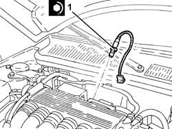
Applies to: engines: 2.5 V6, 3.2 V6; all production periods; only with equipment: Euro 3
Tighten the bands securing the air conditioning system pipes to the right panel.
Place the power unit back in its housing using the hydraulic jack.
1. Tighten the bolt fixing the gearbox side rigid power unit support to the flexbile mounting to the specified torque.
| Fastening | Component | Ø | Value (daNm) |
|---|---|---|---|---|
1 | Bolt | POWER UNIT GEAR BOX END RIGID MOUNT | M10 | (Flexible mounting side) 4.3 ÷ 5.3 |
2. Remove the hydraulic jack from under the gearbox.
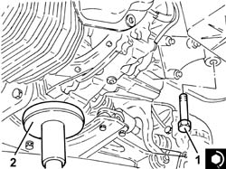
Applies to: engines: 2.5 V6, 3.2 V6; all production periods; only with equipment: Euro 3
Place the guide pipe for the engine oil dipstick back in its housing and tighten the nut.
1. Connect the exhaust pipes between the right preconverter and the catalytic converter (1a), preconverter side, with the gaskets in place and tighten the nuts (1b) to the specified torque.
| Fastening | Component | Ø | Value (daNm) |
|---|---|---|---|---|
1b | Nut | LEFT PRECONVERTER.CONVERTER PIPE/ | M8 | (Catalytic preconverter side) 2.5 ÷ 3.1 |
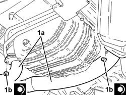
Applies to: engines: 2.5 V6, 3.2 V6; all production periods; only with equipment: Euro 3
Tighten the lower bolts fixing the left catalytic preconverter heat shield.
Place the bracket joining the front sections of the exhaust pipe back in its housing and fasten it using the bolt.
Proceed with the refitting 7055B54 under-engine guard - r r .
Place the engine oil dipstick back in its seating.
1. Tighten the bolts securing the power unit reaction link to the specified torque.
| Fastening | Component | Ø | Value (daNm) |
|---|---|---|---|---|
1 | Bolt | REACTION ROD | M10 | (Bracket on engine side/bracket on bodyshell) 4.2 ÷ 5.1 |
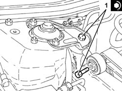
Applies to: engines: 2.5 V6, 3.2 V6; all production periods; only with equipment: Euro 3
Connect the electrical connection to the fuel injection-ignition control unit.
Connect the fuel vapour recovery pipe quick release fitting to the air chamber.
Connect the vacuum intake pipe to the air chamber and tighten the band.
Connect the electrical connection to the throttle body integrated with the D.V.L.
Connect the electrical connection for the right Lambda sensor and fasten the electrical wiring using the bands.
Close the electrical connection box cover.
Proceed with the refitting 5530B10 battery - r+r .
Place the corrugated hose, complete with resonator, back in its housing and fasten it using the bands.
Connect the oil vapour recirculation pipe to the corrugated hose and tighten the band.
Remove the car from the ramp.